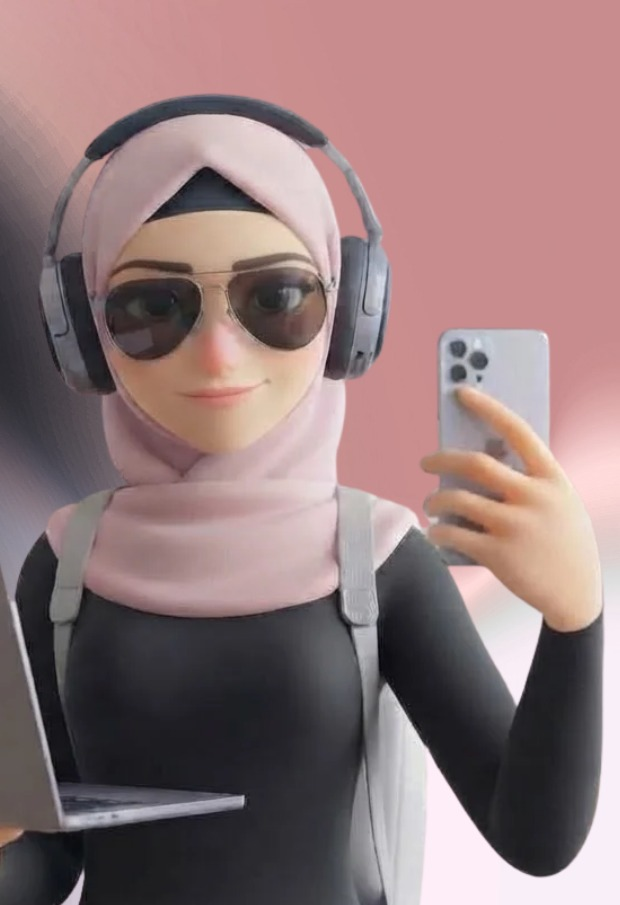
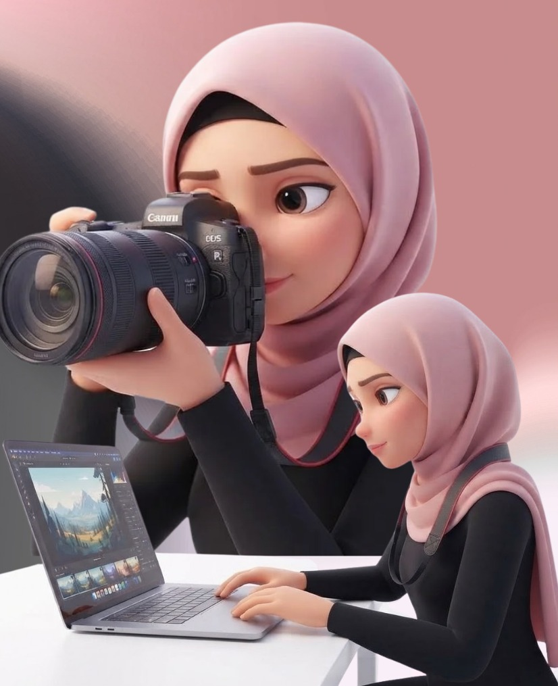

Content creation & production
Full-cycle video creation: concept, scripting, shooting, and editing.
Zeinab Ajami
Content Creator · Video Editor
Creative ideas, made to move people.
A little bit of everything

SCRIPT WRITERVIDEO EDITORVISUAL STORYTELLERSOCIAL MEDIAFrom the first idea to the final frame, I create thoughtful digital content that feels human, clear, and memorable.
The person behind the ideas
Zeinab Ajami
I’m a Business Administration graduate with a concentration in Management Information Systems (MIS) from Lebanese International University.
For more than three years, I’ve managed social media pages, supported administrative operations, and produced digital media from scratch—including scripting, shooting, and video editing.
What I bring to the table
Ideas into impact
Full-cycle video creation: concept, scripting, shooting, and editing.
Building, growing, and managing social pages and digital campaigns.
Sharp organization paired with practical, modern content tools.

BEHINDA few things I’ve made
Selected projects
I managed social media channels for a polyclinic for three years, creating and publishing content for its audience.
PAGE & CAMPAIGN LINKS
Short-form reels and promotional clips edited with CapCut and Canva.
A little imagination, a little technology
A new creative toolkit
I use AI as a creative partner to explore visual ideas, develop concepts, and bring imaginative campaign directions to life.
The tools behind the craft
Practical tools, thoughtful results
CONTENT & EDITING
PRODUCTIVITY & DATABASES
Zeinab Ajami